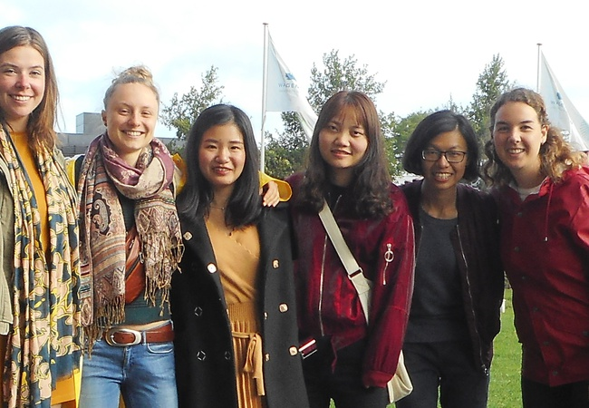
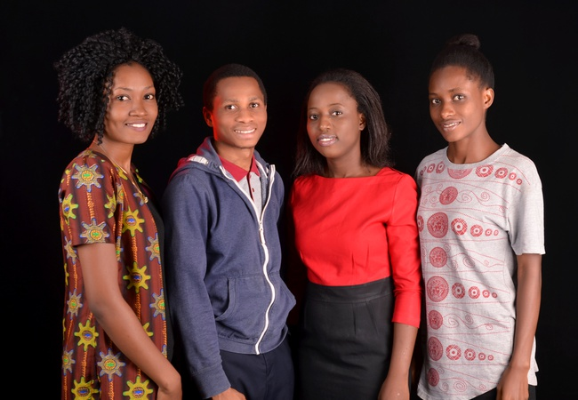

Solutions
Enhancing coherence of international policies aiming at incentivizing the implementation of Climate Smart Agriculture (CSA) by formulating “Policy Briefs” that advise the United Nations Secretary General (UNSG)
CLIMATE SMART AGRICULTURE - FARMERS INTERNATIONAL NETWORK
Dynamic Nigeria

Policy incentives for the implementation of CSA
The Hungribles

Policy Incentives for Implementing Climate Smart Agriculture
Team Nigeria